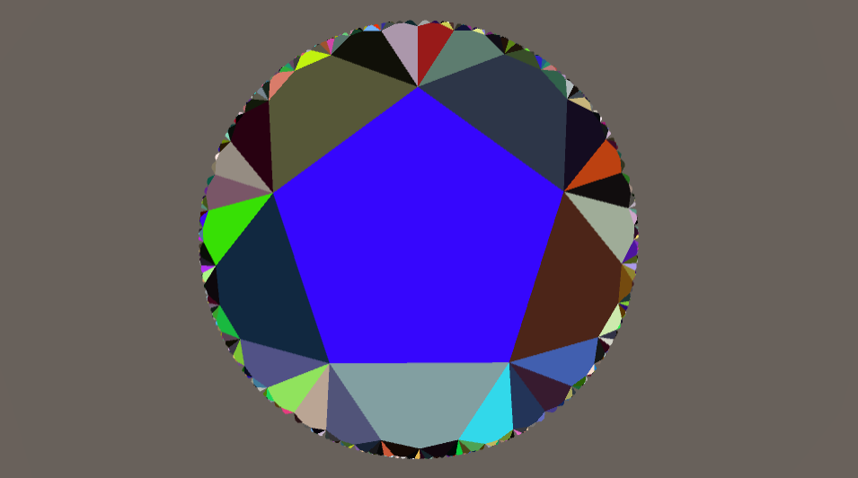
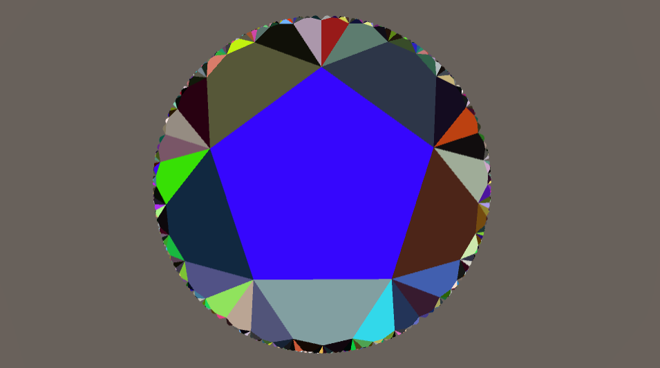
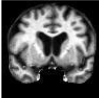
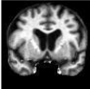

Hello! I'm a CS PhD student in the Harvard Slade Lab, funded by the NSF GRFP. I'm interested in using computer vision, human-robot interaction, and robotics to create useful assistive devices.
I'm currently working on a smartphone-based navigation assistant for people who are blind or visually impaired.
Some of my past/current projects are shown below. To see my academic record, work experience, and more, check out my CV.
Exploring Generative Models in Hyperbolic Space
Hyperbolic space is a generally under-explored topic, but it's particularly interesting because unlike Euclidean space, hyperbolic space expands exponentially due to having negative curvature, which makes it much more interesting to explore and far less limiting to explore.
During summer 2021 I worked with Prof. Ryan Adams to develop a system for visualizing and exploring generative models in simulated hyperbolic space. I implemented a model, projection, and a square tiling system for hyperbolic space in OpenGL and connected the model with a PGAN for generating correlated images based on geodesic distance.
For my undergraduate senior thesis I extended this work by implementing a generalized tiling system and a text-to-image model (LAFITE). I also ran simulated experiments to gauge the effectiveness of my system for finding imagined outputs from a model.
A simple demo of the app is playable here
 

Convolutional Transformers for Inertial Navigation
For my junior independent work at Princeton, I implemented neural network architectures that improve on existing state-of-the-art architectures on the task of inertial navigation. This task uses measurements from inertial measurement units (IMUs), which contain an accelerometer and a gyroscope, to predict an objects position. IMUs are cheap, ubiquitous, energy-efficient, and used in a wide variety of applications.
My models use a transformer encoder and incorporate convolutional layers to extract both global and local data relationships, and achieve better results than the previous best method.
OSCAR: Occluding Spatials, Category, And Region under discussion
For the final project for COS484 (Natural Language Processing) at Princeton, we reproduced a question-answering model and the ablations from this paper. We additionally performed several of our own ablations, and tested using different models for generating question embeddings.
Pedestrian Detection and Interpretability
For the final project for COS429 (Computer Vision) at Princeton, we investigated whether CNNs trained for object detections are reliant on visual cues when detecting pedestrians. We trained a Faster R-CNN on the Caltech Pedestrian Dataset, evaluated the model on different categories of pedestrian images, and improved the model by up-weighting images in poor-performing categories during training.
{kind=link}
Ray Tracing
During a summer internship at Oregon State University I created a simple ray tracer using C++. I implemented and tested methods for improving image rendering speed and making rendered images more realistic.
The top image is an output from an early version of the ray tracer that used simple methods such as antialiasing and reflection.
The bottom image is an output that used more advanced techniques, such as Monte Carlo path tracing, to create more realistic lighting.
I presented my work at the 2018 ASE Symposium (see p.25) at the University of Portland.

Dementia Diagnosis
Over the course of 2016 and early 2017 I helped develop a project that used deep convolutional neural nets to analyze MRI scans and attempt to diagnose various stages of dementia. My motivation for this project comes from my family's history of Alzheimer's.
By developing a technique that allowed the 3D MRI scans to each be split into hundreds of 2D "slices" as seen in the image, I was able to substantially improve the accuracy of the program.
This project was submitted to the 2017 Central Western Oregon Science Expo and the subsequent Intel Northwest Science Expo, where it won several awards.
 
